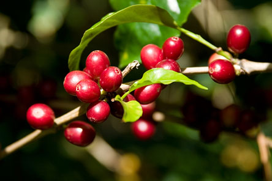
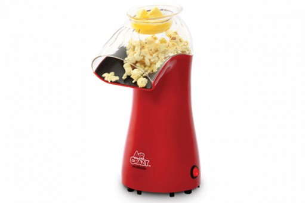
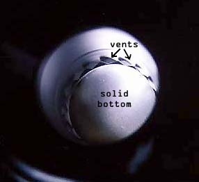
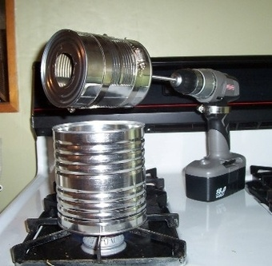
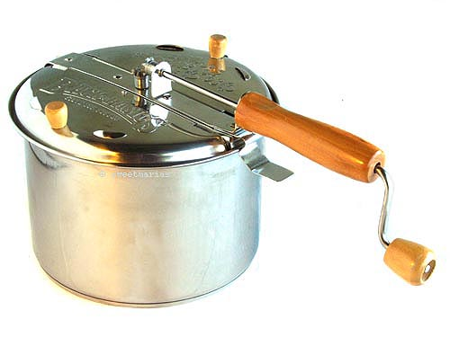
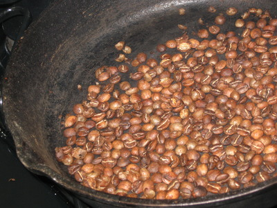

Coffee RIY
Coffee Roasting 101
YAPC::NA 2014
Orlando, Florida
Jake Goldsborough / @rjgoldsborough
This is coffee
Coffee Consumption
We drink ALOT of it
1-2 billion cups per day
Second most traded commodity in the world
(guess the first)
Coffee History
Named after Kaffa, region in Ethiopia where coffee was discovered.
Kaldi, goatherder, early as 9th century
Coffee History
Didn't become popular until around 1100 when coffee spread to Yemen.
Roasted and boiled by Arabs creating قهوة which was a named formerly used for wine.
First coffee shop opened in Constantinople around 1475
Coffee History
Khair Bey, governor of Mecca, bans coffee.
Fears it will cause resistance to his power.
WAS EXECUTED
Coffee Roasting
Pick a roaster:
DIY methods include hot air, stovetop, oven, etc.
Prebuilt coffee roasters include hot air, drum, stovetop.
Forced Air (preferred)
Forced Air (preferred)
Stove Top
j/k
Ye Olde Skillet/Wok
Coffee Roasting
Pick some green coffee beans:
Good starter beans include Central American and South American beans.
LET'S ROAST
Green - 0°F

Starts to cook - 270°F

Early yellowing - 327°F

Yellow, starting to tan - 345°F

Light brown - 370°F

Brown - 393°F

1st crack begins! - 401°F

1st crack is now happening - 415°F

1st crack ends - City Roast - 426°F

Now at a City+ Roast - 435°F

Full City Roast - almost 2nd crack - 444°F

Full City+ Roast - first snaps of 2nd crack - 454°F

Vienna or Light French Roast - 2nd crack is happening - 465°F

Full French - 474°F

Fully carbonized - 488°F

FIRE HAZARD - 497°F